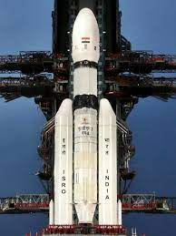
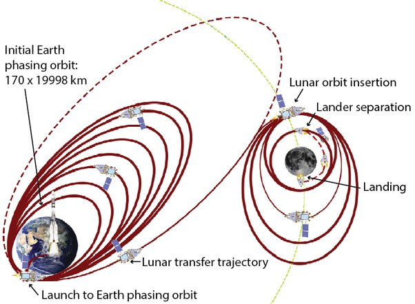

Welcome to the "About Chandrayaan-3 Mission" page
Chandrayaan-3 is the third lunar mission carried by the
Indian Space Research Organization(ISRO). This mission is launched on
14th July, 2023 at 2:35pm IST.
Here are the images of the rocket used and the path of it from Earth's
atmosphere to moon.


Chandrayaan-3 estimated date of landing on the surface of the moon is 23rd
or 24th of August, 2023. All scientists are hoping for the safe landing of the
spacecraft.
Mission of Chandrayaan-3:
The main objective of the mission is to study the unexplored parts
of the moon which includes the study of its topography, seismography,
surface chemical composition and composition of the lunar atmosphere.
Current status of Chandrayaan-3:
The fourth orbit-raising maneuver (Earth-bound perigee firing) is completed.
The spacecraft is now in a 71351 km x 233 km orbit.